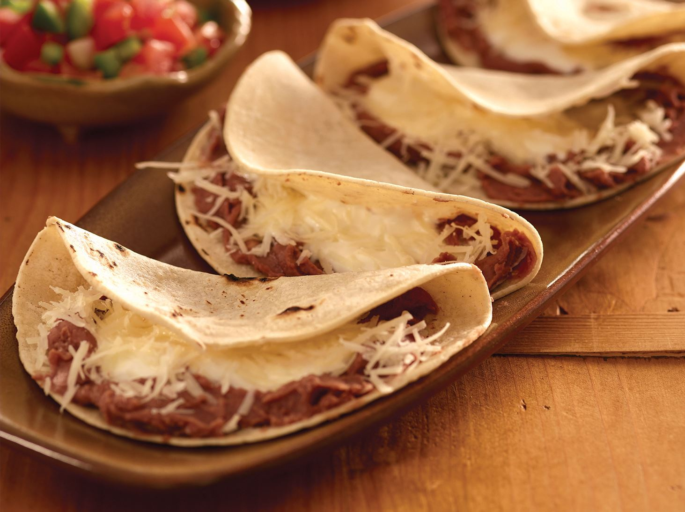

Baleada

The 'baleadas' are a traditional plate from Honduras (my home town)
that forms great part of our gastronomy, being THE main plate along
side the 'pollo chucho' and some other great plates.
Ingredients
- Tortillas
- Beans (frijoles)
- Grated cheese
- Eggs
Although the baleadas can have more to it than this ingredients, they are the
base of the plate, you can add whatever you fill.
How to cook it
- Get the tortillas, you can make it with flour mas or just buy it.
- Prepare the beans, you want to mash them while on the stove.
- while the beans are heating you can start making some scramble eggs, don't forget to move the beans.
- Once the eggs and the beans are ready you want to put them on a half of the tortilla, first the beans, then the eggs.
- You can the the cheese.
- If you want to add something else this should be that step, it could chicke, some souce, even Dorito chips if you want.
- Close the tortilla and enjoy the food!
Go back home